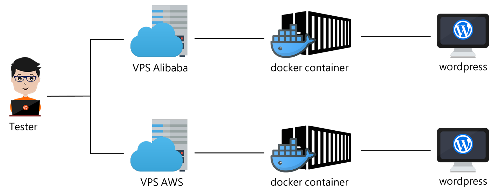
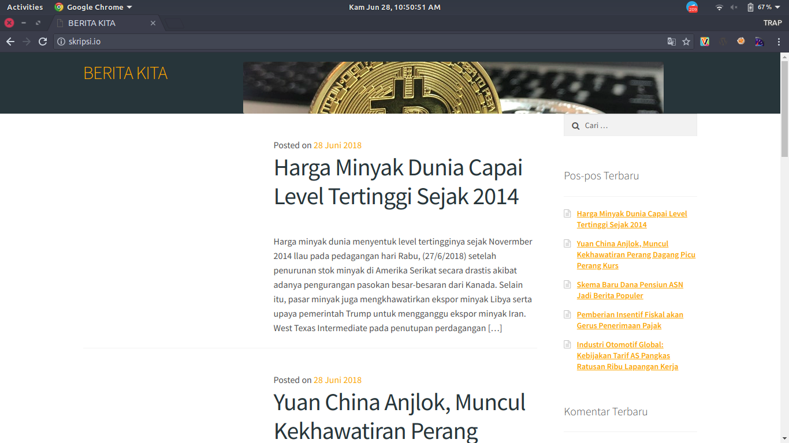

ANALISIS PERBANDINGAN PERFORMANSI PADA LAYANAN CLOUD AWS EC2 DAN ALIBABA ECS UNTUK IMPLEMENTASI CONTAINER
Oleh: Amanu Alatibi135410203
Latar Belakang
Perkembangan dunia informasi hingga saat ini semakin berkembang dengan cepat. Perkembangan pesat teknologi internet dapat dicerminkan oleh meningkatnya jumlah pengguna internet. Diambil dari laman web kominfo.go.id presentase pengguna internet indonesia menempati posisi ke enam dunia dengan jumlah pengguna mencapai 123.0 juta orang pada 2018. Diperkirakan sebanyak 3,6 miliar manusia di bumi bakal mengakses internet setidaknya sekali tiap bulan.
Sistem informasi berupa website dalam melakukan semua urusan bisnisnya, memerlukan server yang handal dalam pemrosesan. Seiring dengan berkembangnya layanan cloud IaaS maka semakin banyak pilihan dari perusahaan penyedia layanan tersebut. Salah satu mekanisme untuk lebih mengoptimalkan penggunaan sumber daya yang ada adalah dengan memanfaatkan teknologi Container. Tidak seperti virtualisasi mesin, container tidak menggunakan hardware untuk virtualisasi.
Rumusan Masalah
Dari latar belakang masalah yang diulas sebelumnya, maka rumusan masalah dalam penelitian ini yaitu bagaimana perbandingan performa docker yang berjalan pada dua layanan cloud IaaS: AWS EC2 dan Alibaba ECS.
Ruang Lingkup
Berdasarkan rumusan masalah maka dibuat beberapa ruang lingkup permasalahan meliputi:
- CMS(Content Management Sistem) dan Database yang digunakan hanya sebagai simulasi tidak termasuk dalam pembahasan.
- Parameter yang dianalisis adalah response time, request http, throughput, memory dan processor.
- Sisi security atau keamanan yang mencakup sistem operasi, web server, maupun website yang digunakan dalam penelitian ini tidak termasuk dalam pembahasan.
Tujuan Penelitian
Tujuan yang ingin dicapai dari penelitian ini adalah untuk membandingakan performa dari docker yang berjalan pada dua layanan cloud IaaS: AWS EC2 dan Alibaba ECS.
Manfaat Penelitian
Penelitian ini diharapkan dapat menjadi bahan referensi untuk pemilihan layanan cloud yang akan di gunakan.
Tinjauan Pustaka
Penelitian yang dilakukan oleh Sanjay P. Ahuja dan Niharika Deval, (2018) Tentang Evaluasi Kinerja IaaS Cloud Services Dengan Benchmark Tingkat Sistem. Penelitian tersebut membandingkan beberapa provider IaaS: Amazon EC2, Google Compute Engine, Microsoft Azure dan IBM Softlayer, dengan menggunakan metode benchmarking untuk mengukur kinerja server, kinerja file I/O, kinerja jaringan, dan kinerja variability dari ke empat provider.
Penelitian yang dilakukan oleh Ida Sofiana, (2012) Tentang perbandingan kinerja sistem virtualisasi dan layanan Cloud Computing. Penelitian tersebut membandingkan antara mesin virtual dan layanan cloud computing berdasarkan biaya, proses setup sistem, sumber daya yang dibutuhkan, serta kinerja (proses login, kirim dan baca e-mail, kirim dan baca e-mail dengan attachment).
Penelitian yang di lakukan oleh Vishaka Balasubramanian Sekar, dkk (2017) tentang Perbandingan Platform Docker Container hosting AWS EC2 dengan Joyent’s Triton. Pada penelitian tersebut membandingan kinerja, keamanan, biaya, dan alat dari dua penyedia cloud, membandingkan docker yang di hosting di VM dan docker di tirton, dan Membandingkan Docker vs KVM dalam hal latensi dan penggunaan CPU untuk server web dan menyimpulkan bahwa Docker adalah alternatif yang ringan dan berkinerja tinggi untuk KVM.
Penelitian yang di lakukan oleh M. Agung Nugroho, M.Kom dan Rikie Katardi, (2018) Tentang analisis kinerja penerapan container untuk load balancing web server pada raspberry pi. Pada penelitian tersebut menguji beban request terhadap singel container dan multi container untuk membandingkan kinerjanya.
Penelitian yang dilakukan oleh Handik Yanwar Efendi, (2017) tentang uji performa linux container docker untuk deployment aplikasi berbasis web. Pada penelitian tersebut mengimplementasikan penggunaan docker pada website yang menggunakan Content Management System untuk melakukan pengujian kompatibilitas docker pada aplikasi berbasis website yang telah dibangun pada Platform dan lingkungan host yang berbeda.
Penelitian yang dilakukan oleh Addri Pershance And Taga, (2017) tentang rancang bangun web hosting menggunakan docker container dan clustering pada CoreOS: docker container. Pada penelitian tersebut mengimplementasikan aplikasi berbasis web menggunakan docker dan melakukan pengujian terhadap efektifitas docker sebagai software virtualisasi modern dalam penggunaan sumber daya penyimpanan dan memory .
Metode Analisa
Penelitian ini bertujuan untuk menentukan kinerja dari docker yang berjalan di layanan IaaS tertentu. Metode benchmarking yang di usulkan diuji pada docker yang berjalan pada dua layanan cloud IaaS: Amazon EC2 dan Alibaba ECS.
Perangkat Lunak
Kebutuhan Perangkat lunak untuk penelitian ini adalah sebagai berikut:
- Sistem Operasi Linux Ubuntu server 16.04.
- Sistem Operasi Ubuntu 18.04 digunakan sebagai tester.
- Docker.
- Apache Benchmark sebagai pemberi beban.
- Sysbench sebagai testing prosessor dan memory.
perangkat keras
Instances Cloud Providers 1cpu dan 2gb ram
| IaaS Cloud Platforms | CPU | RAM |
| Amazon EC2 | 1 | 2 GB |
| Alibaba ECS | 1 | 2 GB |
Instances Cloud Providers 2cpu dan 4gb ram
| IaaS Cloud Platforms | CPU | RAM |
| Amazon EC2 | 2 | 4 GB |
| Alibaba ECS | 2 | 4 GB |
Teknik Pengumpulan Data
Pengumpulan data menggunakan perangkat lunak Apache Benchmark (AB). Apache Benchmark adalah tools untuk mengukur performance apache, dengan ab kita dapat melihat kapabilitas apache untuk melayani request dari client dan Sysbench adalah tools untuk mengukur performansi (prosessor dan memory) dari masing-masing mesin.
Rancangan Sistem
Dalam membuat sistem penelitian ini penulis akan menggunkan 4 buah virtual private server yang di bagi menjadi 2 bagian untuk pengujian yaitu dua server dengan spesifikasi 1 cpu, 2gb ram dan dua server dengan spesifikasi 2 cpu, 4 gb ram. Keempat server ini akan di install menggunakan os Linux Ubuntu 16.04 dan pada masing-masing server akan di install docker. Selanjutnya pada web penulis menggunakan aplikasi wordpress berita yang sudah jadi dan berjalan diatas aplikasi docker.
Sekenario Uji Coba
Uji coba ini menggunkan 2 buah spesifikasi server yang berbeda dimana pada instance 1 menggunakan 1cpu, 2gb ram dan pada instance 2 menggunakan 2cpu, 4gb ram. Pada percobaan ini melakukan pengukuran dalam 3 jenis request yaitu, 10.000 request , 15.000 request , dan 25.000 request pada nstance 1, sedangkan untuk pengukuran nstance 2 yaitu, 15.000 request, 25.000 request dan 35.000 request.
Pengujian dilakukan di 3 tempat yang berbeda (PT.Era System Digital, STMIK AKAKOM, dan Indihome rumah) sebagai uji test. Untuk percobaan terhadap prosessor diberikan beban sebesar 10000 dan memory diberikan beban sebesar 100G dengan menggunakan aplikasi sysbench.
Rancangan Pembebanan
Detail skenario pada 1 cpu dan 2gb memori yang akan di lakukan
| Uji Coba ke- | Sekenario |
| 1 | 10.000 request , 50 concurrent |
| 2 | 10.000 request , 100 concurrent |
| 3 | 10.000 request , 150 concurrent |
| 4 | 15.000 request , 50 concurrent |
| 5 | 15.000 request , 100 concurrent |
| 6 | 15.000 request , 150 concurrent |
| 7 | 25.000 request , 50 concurrent |
| 8 | 25.000 request , 100 concurrent |
| 9 | 25.000 request , 150 concurrent |
Detail skenario pada 2 cpu dan 4gb memori yang akan di lakukan
| Uji Coba ke- | Sekenario |
| 1 | 15.000 request , 100 concurrent |
| 2 | 15.000 request , 200 concurrent |
| 3 | 15.000 request , 300 concurrent |
| 4 | 25.000 request , 100 concurrent |
| 5 | 25.000 request , 200 concurrent |
| 6 | 25.000 request , 300 concurrent |
| 7 | 35.000 request , 100 concurrent |
| 8 | 35.000 request , 200 concurrent |
| 9 | 35.000 request , 300 concurrent |
Pelaksanaan Pengujian
Pelaksanaan pengujian untuk mendapatkan nilai dari throughput, response time dan request http penulis menggunaka aplikasi apache benchmark dengan perintah seperti berikut: # ab -n [jumlah request] -c [jumlah concurrent] [http://hostname[:port]/path] Opsi -n menentukan berapa kali URL tersebut diakses, sedangkan opsi -c menentukan jumlah URL yang diakses dalam waktu bersamaan, kemudian diikuti dengan URL dari aplikasi yang ingin diuji.
Dan menghasilkan beberapa output sperti:
- Requests per second: Jumlah permintaan per detik. Nilai ini adalah hasil dari membagi jumlah permintaan dengan total waktu yang diambil.
- Time per request: Waktu rata-rata yang dihabiskan untuk setiap permintaan.
- Transfer rate: Tingkat transfer dihitung dengan rumus total baca / 1024 / waktu yang dibutuhkan.
Pelaksanaan pengujian untuk mendapatkan nilai dari prosessor penulis menggunaka aplikasi Sysbench dengan perintah seperti berikut: # sysbench --test=cpu --cpu-max-prime=10000 run Opsi --test=cpu digunakan hanya untuk pengetesan terhadap cpu, sedangkan opsi --cpu-max-prime menentukan jumlah maksimal dari pembebanan cpu.
Pelaksanaan pengujian untuk mendapatkan nilai dari memory penulis menggunaka aplikasi Sysbench dengan perintah seperti berikut: # sysbench --test=memory --memory-total-size=100G run Opsi --test=memory digunakan hanya untuk pengetesan terhadap memory, sedangkan opsi --memory-total-size menentukan jumlah maksimal dari pembebanan memory.
Dari kedua perintah sysbench nantinya terdapat salah satu output yang akan dimasukkan yaitu:
- Total time: Jumlah waktu yang dihasilkan dari setiap permintaan.
perancangan sistem
Untuk merancang sistem ini penulis menggunakan docker didalam VPS sebagai sarana untuk melakukan pengujian. Berikut topologinya:
Dapat dilihat pada gambar diatas seorang tester merequest ke server VPS yang dalam hal ini penulis menggunakan docker, tester akan memberikan banyak request dengan tools Apache Benchmark.
Rancangan Web
Pada penelitian ini penulis menggunakan wordpress berita sebagai isi dalam docker.
Pada gambar diatas merupakan halaman utama web, halaman tersebut bisa diakses user saat membuka browser dan memanggil alamat public ip dari masing-masing layanan cloud. Hasil tampilan yang akan dilihat oleh user ini merupakan kondisi dari front-end.